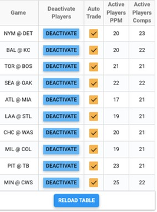
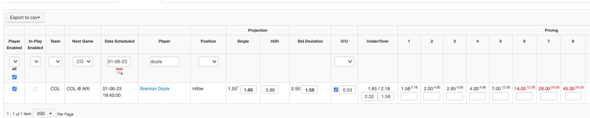
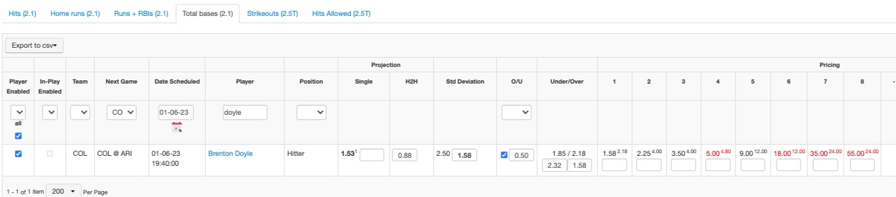
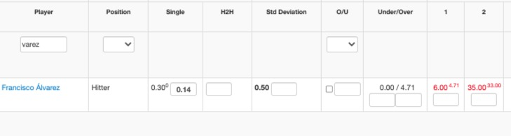
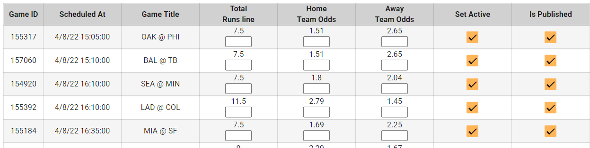
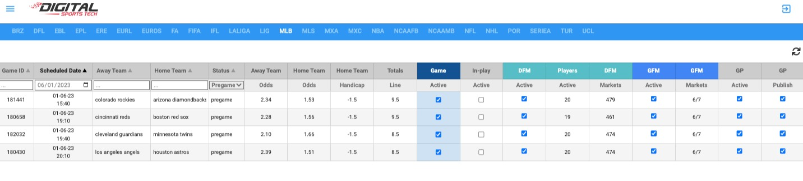
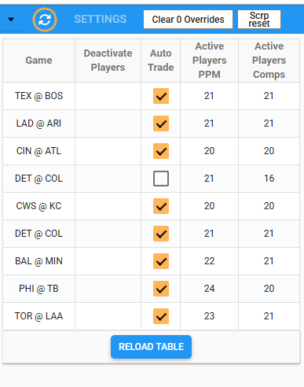
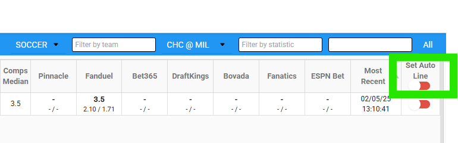
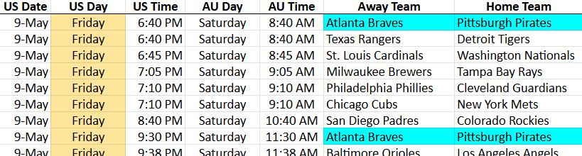
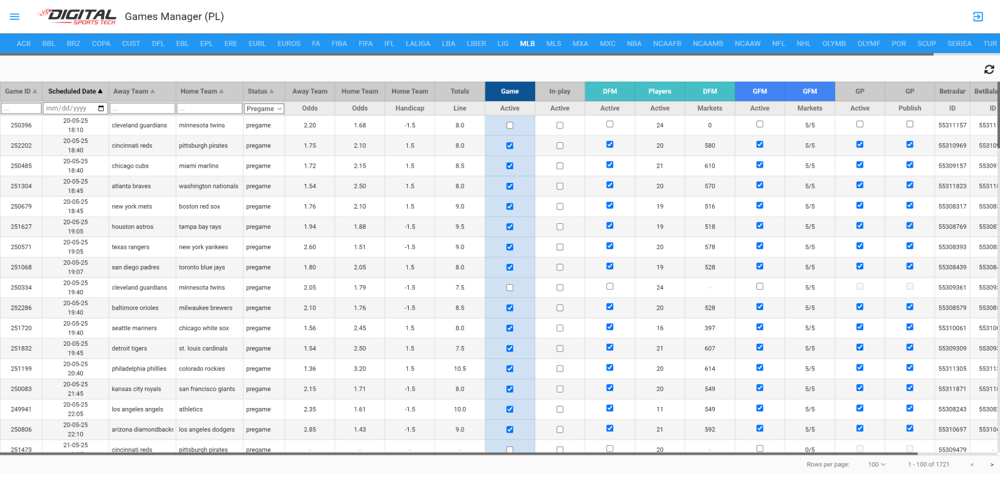

MLB Setup:
Step 1: Turn on Auto Trading
- In the TT Odds Comp Screen, turn on auto-lines for all available games by clicking the checkbox next to each game (if a game is not available in the comp screen by the end of your shift, please note this in your handoff note in the trading team slack channel to the next trader). Comp Screen should look like this after you’ve activated auto-lines:

DOUBLE HEADERS:
- Check if there are any doubleheaders scheduled for that day (use ESPN.com). If there are doubleheaders, wait on setting either game live. See suspended game rule below if it’s a game that is in-progress from another date.
- Send an email to Sportradar (support@sportradar.com) asking them to confirm the sport_event ID from the SR UOF API for Game 1 and Game 2 of the doubleheader.
- Once we receive confirmation, make sure our Game IDs match the starting times in the Games Manager.
- Assuming IDs match, set game 1 live.
- If IDs don’t match, we need our tech team to switch these. Please contact them before setting live.
- Make sure to only activate GAME 1 ONLY. If a game is listed twice in the comp screen, try to verify which game is which by looking at the strikeout markets and making sure the pitchers match the expected Probable Pitchers for Game 1. If not sure, do not activate either game for these teams and let the morning trader know during handoff.
- The second game can be activated after the start of Game 1.
Step 2: Review the odds for each stat
- Players will auto activate if AT is on in the comp screen and they have at least two comps, one being either FD or DK.
- Wait about 10 minutes after turning on comps before checking ORR.
- Make sure you click Re-Calculate all for each stat before checking it.
- You should not need to make a lot of manual adjustments anymore. Only very clear issues with lots of red will need adjusting. If you find yourself putting overrides in for every player, something is wrong.
- Hits: adjust std dev by 0.1 or 0.2 if price is red by a lot for 2/3 hits. Do not adjust the 1 hit price if the OU line is 0.5 and do not adjust the 2 hit price if the OU line is 1.5.
- HR: Don’t need to adjust
- H+R+R: Adjust projection and/or std dev if 2-3 prices are red by a lot. Don’t need to remove all the red, just lower the prices to a more reasonable level.
- Total Bases: Some adjustments needed for 4+ for top players sometimes. Best way to adjust is increase projection. It’s trial and error, do 0.25 adjustments and see if you need more.
- Don’t worry too much about the red prices of high values like 7, 8+. Only adjust if lots of numbers are red.
- We need to make sure the 4+ total base price is not higher than 1 Home Run price. Export to CSV both stats and load it into this tool. Fix any players needed:
- Strikeouts: Shorten odds under projection if needed, raise std dev if lots of red above projection
- Hits allowed: Zero out any rookie pitchers without a line. Don’t need to make many other adjustments
- Stolen Bases: If a red price for 2 steals is much lower than our price, adjust projection or std dev.
- SS and H2H values will be populated based on the O/U line and pricing. Std dev for offensive stats will also be auto-populated.
- The SS and H2H values are based on the Min/Max projection settings. This will insert a H2H price based on the O/U pricing, then will input a minimum SS boost above the H2H pricing. There is also a max value we can insert above the O/U line for each stat.
- Example of small SS increase (red prices still exist, but gap is smaller):

- Since HR pricing is based on comps, there is no need to adjust prices based on true odds.


Step 3: Activate game props in the Wizard Market Manager
- If a game is missing market prices in the Wizard, you can add in manual values from a comp like DraftKings or Bet365. If multiple books do not have game markets live, there is likely a question about who the starting pitcher is for one of the teams. In that case, you can leave game props off for this game until more information is available.

- Game props can be reviewed in the Pending Market Report of the trading tool.
- Review and adjust “Will there be a score in 1st inning” and “total hits” lines for each game - use Oddsjam to review major comp pricing for these markets. If you need to activate a new line for a game, make sure to deactivate the previous line in the Pending Market Report.
- Review and adjust the “team with most hits” market. Check our pricing against Bet365 in their team props tab. Typically our price for the underdog is too high and we need to shorten this.
- For any doubleheaders, make sure we only have Game Props active for Game 1.
Step 4: Activate games
- Set games live in the Games Manager (PL).
- Click the three boxes for each game (the two GP boxes should already be active due to step 3 above):
- Game is game manager
- DFM generates the player data feed
- GFM (active/markets) is game market prices

- Highlight the DST Schedule in green when games are live and post that games are live in the MLB channel on Slack.
- Check the Front End to make sure the games are live and feeds were properly generated.
POSTPONED MLB GAMES
- If a game is postponed, deactivate the game in the Games Manager (PL) to remove it from the front end.
- In the comp screen, uncheck AT within the game table (shown below for the DET @ COL game). Do this as soon as possible as the game will disappear from the table once MLB/Radar update their schedule to the new date the game will be played on.

- Filter the comp screen to the postponed game. Turn all “Set Auto Line” statuses to red (you can use the top button by clicking it twice - once will turn auto lines on for all markets, twice will then turn them all off).

- Go into the Odds Review Report and filter by the postponed game. Deactivate all O/U markets for all stats. Then hit the clear override button for each stat.
- Deactivate all hitters and pitchers in PPM or ORR.
- Update the schedule sheet with the new date and time of the postponed game, and highlight the rows in blue as shown below so the setup crew is aware there is a doubleheader on that new day.

SUSPENDED MLB GAMES
- If a game is suspended from the previous day and will be resumed the next day, we do not want to re-activate this game in the backend.
- This game is in progress and should be left off since it’s already started and previous bets are pending
- See game ID 250396 for example
- Also, DO NOT VOID a suspended game that is being resumed the following day.
